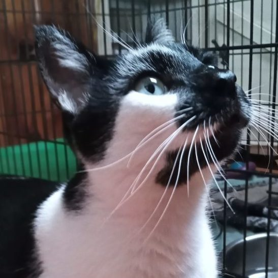
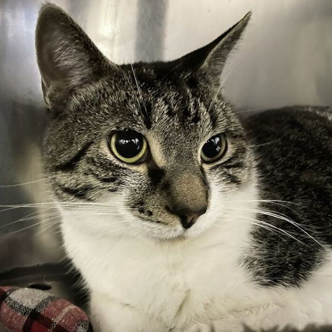
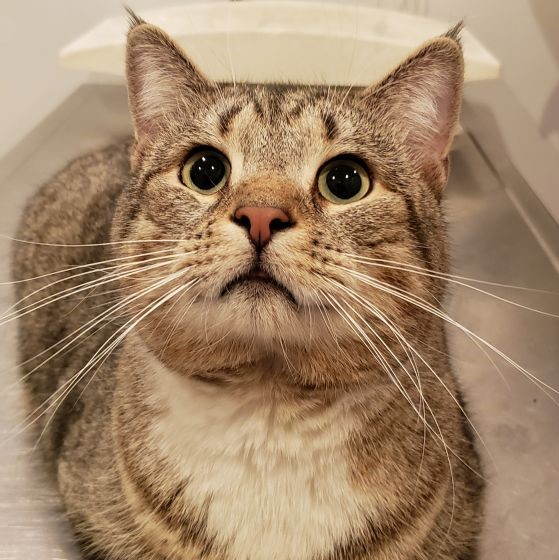
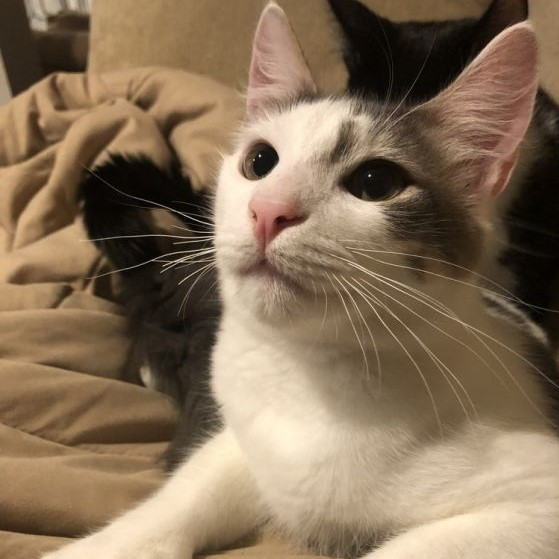
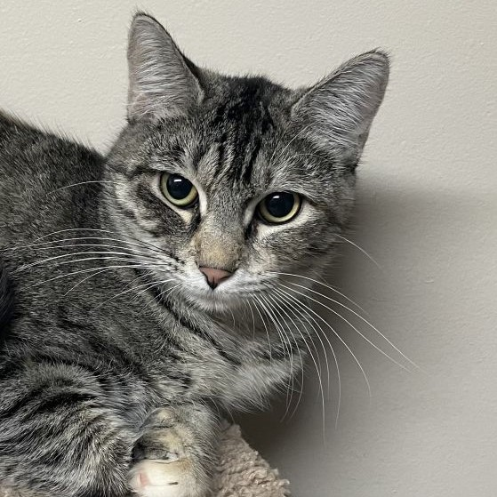

Click on the pictures to learn more about the furry ones!
| Picture | Age | Gender | Description | Location |
|---|---|---|---|---|
|  | Adult | Male | Oreo was found stray in September and has been in a foster home since, so that he may rest and decompress from his life on the streets. According to his foster mom he is a sweet cat who loves head scratches and will knock your hand with his forehead for them - all you have to do is come down to his level and put your hand out, and he will come. He gets along with the other cats in the foster home, so he would likely be open to a feline roommate, with proper introductions, of course. He does come with a warning for your feet under the covers: make sure the blanket is thick because it's playtime for Oreo! He must think that feet are toys! He will need some time to get used to you and your home, but he has blossomed in his foster home, and we hope he’ll do the same in his forever home. He deserves friendly, responsible people who will take good care of him – is that you? NOTE: Oreo is in his foster home and therefore an appointment will be necessary to meet him. | Quincy, MA |
|  | Adult | Male | Pepe is a 5-year-old handsome tabby male, surrendered to us because sadly his owner passed away. Pepe is a low key, hang back kind of kitty who enjoys his quiet time, however he also loves chasing down aluminum balls, things on strings and of course, catnip. Pepe had a feline roommate so he might be open to another feline family member. Older kids would do OK; a home with dogs would not be a good fit. | Boston, MA |
|  | Adult | Male | Macho Man is now ready for adoption! Macho Man was surrendered due to a move where a dog lived. And it was quickly determined that the dog doesn't like cats. In the process, he determined that Macho Man didn't like that particular dog too. Macho Man is a sweet and goofy cat. He's a very curious cat that loves to explore. He also loves to drink water from the faucet too. Macho Man is also a very very big cat. He's not overweight but built like a tank or maybe like Gronk. He's just big and handsome. Macho Man is 3-5 year old neutered male cat with up to date shots. | Melrose, MA |
|  | Kitten | Male | Meet our 7 month old math wizard kittens Geo, Pi, Trig, and Quad! Geo can fly...well almost. When playing he leaps great distances through the air to catch his toys. Out of the four math brothers, Geo is the most reserved. He has come a long way in a short time by watching his brothers. He now loves being pet but is shy around new people and situations. It will take him a little bit to get comfortable but once he does he is very affectionate. Geo is a white kitten with grey spots. He is extremely close to his brother, Geo. They often can be found lying together. Geo and Pi must be adopted together we will not separate them. We feel their ideal home would be an adult only home (or home with older children) as Geo and Pi still can get spooked with sudden movements. | Bolton, MA |
|  | Kitten | Female | My name is Merida and I am a 7-month-old female kitten. I was abandoned by my previous family and had to fend for myself for awhile, which has made me a little hesitant around new people. I need a family that understands that I’ve been through a lot in my short life, and will have the patience to let me get settled into my new home. I am a sweet and curious girl who enjoys playing with laser lights and dangling toys. I definitely need another feline friend in my life to make me feel more comfortable and safe. I get along well with dogs. I can’t wait to find a new home that will love me and keep me safe forever. | Medford, MA |
Not finding the companion you're looking for? Register your breed interest here to receive email when matching animals arrive at the shelter.